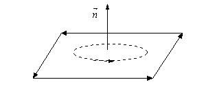
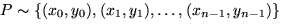
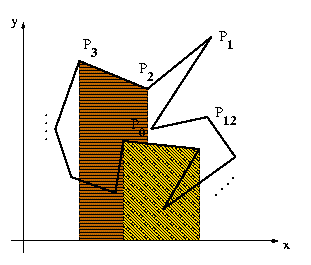

Com deiem el primer dels problemes a resoldre en aquest apartat  consiteix en obtenir la normal a un polígon de l'espai, que ens ve definit per una llista dels seus vèrtexs. Adoptem la convenció (universalment acceptada) que els vèrtexs apareixen a la llista ordenats en sentit antihorari (veure figura). És a dir que la normal al polígon apunta en la direcció en què es mouria un vis normal si el giréssim en el sentit en que estan enumerats els vèrtexs (equivalentment, si ens imaginem un homenet caminant al llarg de la vora del polígon i visitant els vèrtexs en ordre, i si la normal apunta en la seva "direcció cap amunt", aleshores el polígon sempre està a la seva banda esquerra).
Com sabem que el producte vectorial de dos vectors dóna un vector perpendicular a tots dos, podriem pensar en resoldre el problema agafant els vectors directors de dues arestes i prenent el seu producte vectorial (parant ement a l'orientació) com a normal. Tanmateix aquesta no és la solució més recomanable, ja que
Per aquestes raons, hom prefereix un mecanisme que tingui en compte
tots els vèrtexs i atenuï aquests errors. El mecanisme més convenient
consisteix en aprofitar el fet que la raó entre l'àrea d'un polígon a
l'espai i l'àrea de la seva projecció en un pla coordenat és igual a
la component perpendicular a aquest pla de la normal unitària al
polígon. Així, necessitem primer de tot resoldre un problema més
senzill que deixem com a exercici.
Exercici: Càlcul de l'area d'un polígon al pla. Sigui un polígon P donat per la llista dels seus vèrtexs recorreguts en sentit antihorari: . La figura
|  |
mostra un exemple. La idea és calcular l'area del polígon sumant tots els paral·lelògrams que "van cap a l'esquerra" (segons l'ordre dels vèrtexs) com el que apareix pintat de color mahó, i restar les àrees dels que "van cap a la dreta", com el que apareix de color daurat. Mireu de convèncer-vos que aquesta estratègia dóna el resultat desitjat àdhuc per polígons complexes com el de la figura, i mostreu que aleshores s'obté la fórmula:
Usant aquesta fórmula, trobem doncs la següent expressió de la
normal al polígon:
Aquest vector no estarà normalitzat. De fet la seva llargada és igual
a l'àrea del polígon en tres dimensions.